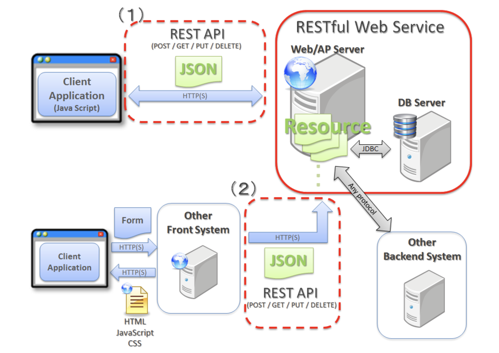

5. チュートリアル¶
5.1. チュートリアル11.1：TODOアプリケーション¶
5.1.1. 環境構築¶
5.1.1.1. PJの作成¶
mvn archetype:generateコマンドは設定したフォーマットのjavaのプロジェクトのひな壇を作成してくれる。
フォーマットを作成することもでき、ベストプラクティスに従った構成を素早く作成できる。
オプションの意味は以下
archetypeGroupId:テンプレートの提供元ID
archetypeArtifactId:今回利用するテンプレートのID
archetypeVersion:テンプレートのバージョン
groupId:PJの識別子
artifactId:作成するJavaPJの名称
version:PJのバージョン名
※terminalで実行する場合は、¥で改行するようにしないとエラーが出た
mvn archetype:generate -B\
-DarchetypeGroupId=org.terasoluna.gfw.blank\
-DarchetypeArtifactId=terasoluna-gfw-web-blank-archetype\
-DarchetypeVersion=5.7.0.RELEASE\
-DgroupId=com.example.todo\
-DartifactId=todo\
-Dversion=1.0.0-SNAPSHOT
5.1.1.2. STSでのPJ立ち上げ¶
STSでImportする。
詳細はチュートリアルに有り
5.1.1.3. PJ構成¶
src
└pom.xml
└main
├java・・・ソースコードを置くことがルール
│ └com
│ └example
│ └todo
│ ├ app ・・・アプリケーション層
│ │ └todo・・・コントローラー
│ └domain ・・・ドメイン層
│ ├model ・・・モデル（データ定義
│ ├repository ・・・リポジトリ（データにアクセス
│ │ └todo
│ └service ・・・サービス（業務処理
│ └todo
├resources・・・設定ファイルをおくことがルール
│ └META-INF
│ └spring
└wepapp
└WEB-INF
└views ・・・jspなどのビュー
src/main/javaのフォルダとpom.xmlが上記なような構成があるだけで、mvnPJと呼ぶことができる。 昔は自由に決めることができていたけど、新規参画者が酷い目にあったので、ルールが画一化された。 結果として、mavenは自動で、src/main/java配下にあるソースをコンパイルしてくれる。
5.1.1.4. PJの動作確認¶
src/main/java/com/example/todo/app/welcome/HelloController.javaのプロジェクトはトップページが準備されている。
★1 @ControllerのアノテーションによりControllerであることを認識させる
★2
@RequestMappingにより/のGETとPOSTに対してhomeというメソッドを紐付け。
処理内容はログの出力、日時の取得、日時情報をモデルに引き渡し、Viewへの連携
★3 ModelにAttribute（変数）を引き渡している。 model側でserverTimeという変数名が使える。
★4
viewのファイル名で、画面を表示先を指定
ViewResolverでsrc/main/webapp/WEB-INF/views/welcome/home.jsp配下のファイルが指定されている
/**
* Handles requests for the application home page.
*/
// ★★★★★1★★★★★
@Controller
public class HelloController {
private static final Logger logger = LoggerFactory
.getLogger(HelloController.class);
/**
* Simply selects the home view to render by returning its name.
*/
// ★★★★★2★★★★★
@RequestMapping(value = "/", method = {RequestMethod.GET, RequestMethod.POST})
public String home(Locale locale, Model model) {
logger.info("Welcome home! The client locale is {}.", locale);
Date date = new Date();
DateFormat dateFormat = DateFormat.getDateTimeInstance(DateFormat.LONG,
DateFormat.LONG, locale);
String formattedDate = dateFormat.format(date);
// ★★★★★3★★★★★
model.addAttribute("serverTime", formattedDate);
// ★★★★★4★★★★★
return "welcome/home";
}
}
5.1.2. Todoアプリケーションの作成¶
ドメイン層とアプリケーション層のステップで作成する。
ドメイン層
Model、Repository、Serviceを作成する。
Modelは変数定義を記述 。
RepositoryはInterfaceとImplementを作成して、中身としては業務を含まないデータへのアクセス処理を記述
Serviceは業務まで含んだ、エラーメッセージのハンドリングまで含めて記述。
アプリケーション層
ControllerとViewを作成する。
Controllerでは、pathとメソッドの紐付け、viewとやり取りするためにmodelへのAttributeの追加などを記述。
Viewでは、JSPなどを記述して画面表示する内容を記述。
5.1.2.1. Domain層の作成¶
Model、Repository、Serviceを作成する。
Modelは変数定義を記述 。
RepositoryはInterfaceとImplementを作成して、中身としては業務を含まないデータへのアクセス処理を記述
Serviceは業務まで含んだ、エラーメッセージのハンドリングまで含めて記述。
5.1.2.1.1. Model作成¶
src/main/java/com/example/todo/domain/model配下に作成
各プロパティとGetter・Setterを作成
todoId：ID
todoTitle：タイトル
finished：完了フラグ
createdAt：作成日
package com.example.todo.domain.model;
import java.io.Serializable;
import java.util.Date;
public class Todo implements Serializable {
private static final long serialVersionUID = 1L;
private String todoId;
private String todoTitle;
private boolean finished;
private Date createdAt;
public String getTodoId() {
return todoId;
}
public void setTodoId(String todoId) {
this.todoId = todoId;
}
public String getTodoTitle() {
return todoTitle;
}
public void setTodoTitle(String todoTitle) {
this.todoTitle = todoTitle;
}
public boolean isFinished() {
return finished;
}
public void setFinished(boolean finished) {
this.finished = finished;
}
public Date getCreatedAt() {
return createdAt;
}
public void setCreatedAt(Date createdAt) {
this.createdAt = createdAt;
}
}
5.1.2.1.2. Repository作成¶
####### Repository Interface作成 Interfaceから作成する
src/main/java/com/example.todo.domain.repository.todo配下にTodoRepository.javaを作成
各関数の引数と返り値のみが定義される。（中身はImplで作成） 記述する機能としては、業務とは独立したデータのCRUD処理のみ記述される
findById
findAll
create
update
delete
countByFinished
package com.example.todo.domain.repository.todo;
import java.util.Collection;
import java.util.Optional;
import com.example.todo.domain.model.Todo;
public interface TodoRepository {
Optional<Todo> findById(String todoId);
Collection<Todo> findAll();
void create(Todo todo);
boolean update(Todo todo);
void delete(Todo todo);
long countByFinished(boolean finished);
}
####### Repository Implementの作成 Implementを作成する
src/main/java/com/example.todo.domain.repository.todo配下にTodoRepositoryImpl.javaを作成
各関数の具体的な処理内容が記載される。 Interfaceで記述した機能について@Overrideして追記
findById
findAll
create
update
delete
countByFinished
★1
Impl側に@Repositoryを記述する。
package com.example.todo.domain.repository.todo;
import java.util.Collection;
import java.util.Map;
import java.util.Optional;
import java.util.concurrent.ConcurrentHashMap;
import org.springframework.stereotype.Repository;
import com.example.todo.domain.model.Todo;
// ★★★★★1★★★★★
@Repository
public class TodoRepositoryImpl implements TodoRepository {
private static final Map<String, Todo> TODO_MAP = new ConcurrentHashMap<String, Todo>();
@Override
public Optional<Todo> findById(String todoId) {
return Optional.ofNullable(TODO_MAP.get(todoId));
}
@Override
public Collection<Todo> findAll() {
return TODO_MAP.values();
}
@Override
public void create(Todo todo) {
TODO_MAP.put(todo.getTodoId(), todo);
}
@Override
public boolean update(Todo todo) {
TODO_MAP.put(todo.getTodoId(), todo);
return true;
}
@Override
public void delete(Todo todo) {
TODO_MAP.remove(todo.getTodoId());
}
@Override
public long countByFinished(boolean finished) {
long count = 0;
for (Todo todo : TODO_MAP.values()) {
if (finished == todo.isFinished()) {
count++;
}
}
return count;
}
}
5.1.2.1.3. Service作成¶
####### Service Interfaceの作成 Interfaceから作成する。
src/main/java/com/example/todo/service/todo配下にTodoService.javaを作成する。
各関数の引数と返り値のみが定義される。（中身はImplで作成）
findAll
create
finish
delete
記述する機能としては、アプリケーションとしての業務処理を行うメソッド

package com.example.todo.domain.service.todo;
import java.util.Collection;
import com.example.todo.domain.model.Todo;
public interface TodoService {
Collection<Todo> findAll();
Todo create(Todo todo);
Todo finish(String todoId);
void delete(String todoId);
}
####### Service Implementの作成 Implementを作成する。
src/main/java/com/example/todo/service/todo配下にTodoServiceImpl.javaを作成する。
エラーメッセージのハンドリングなど、業務的なロジックについて実装している
★1
ServiceImpl側でアノテーションを付与する
★2
@Transactionalはトランザクション管理で、参照のみを行う処理にreadOnly=trueを付与する
★3
@InjectでRepositoryで実装したメソッドのインスタンス注入されるので利用できるようになる。
package com.example.todo.domain.service.todo;
import java.util.Collection;
import java.util.Date;
import java.util.UUID;
import javax.inject.Inject;
import org.springframework.stereotype.Service;
import org.springframework.transaction.annotation.Transactional;
import org.terasoluna.gfw.common.exception.BusinessException;
import org.terasoluna.gfw.common.exception.ResourceNotFoundException;
import org.terasoluna.gfw.common.message.ResultMessage;
import org.terasoluna.gfw.common.message.ResultMessages;
import com.example.todo.domain.model.Todo;
import com.example.todo.domain.repository.todo.TodoRepository;
// ★★★★★1★★★★★
@Service
// ★★★★★2★★★★★
@Transactional
public class TodoServiceImpl implements TodoService {
private static final long MAX_UNFINISHED_COUNT = 5;
// ★★★★★3★★★★★
@Inject
TodoRepository todoRepository;
@Override
@Transactional(readOnly = true)
public Collection<Todo> findAll() {
return todoRepository.findAll();
}
@Override
public Todo create(Todo todo) {
long unfinishedCount = todoRepository.countByFinished(false);
if (unfinishedCount >= MAX_UNFINISHED_COUNT) {
ResultMessages messages = ResultMessages.error();
messages.add(ResultMessage
.fromText("[E001] The count of un-finished Todo must not be over "
+ MAX_UNFINISHED_COUNT + "."));
throw new BusinessException(messages);
}
String todoId = UUID.randomUUID().toString();
Date createdAt = new Date();
todo.setTodoId(todoId);
todo.setCreatedAt(createdAt);
todo.setFinished(false);
todoRepository.create(todo);
return todo;
}
@Override
public Todo finish(String todoId) {
Todo todo = findOne(todoId);
if (todo.isFinished()) {
ResultMessages messages = ResultMessages.error();
messages.add(ResultMessage
.fromText("[E002] The requested Todo is already finished. (id="
+ todoId + ")"));
throw new BusinessException(messages);
}
todo.setFinished(true);
todoRepository.update(todo);
return todo;
}
@Override
public void delete(String todoId) {
Todo todo = findOne(todoId);
todoRepository.delete(todo);
}
private Todo findOne(String todoId) {
return todoRepository.findById(todoId).orElseThrow(() -> {
ResultMessages messages = ResultMessages.error();
messages.add(ResultMessage
.fromText("[E404] The requested Todo is not found. (id="
+ todoId + ")"));
return new ResourceNotFoundException(messages);
});
}
}
5.1.2.2. アプリケーション層の作成¶
ControllerとViewを作成する。
Controllerでは、pathとメソッドの紐付け、viewとやり取りするためにmodelへのAttributeの追加などを記述。
Viewでは、JSPなどを記述して画面表示する内容を記述。
5.1.2.2.1. Controllerの作成¶
src/main/java/com/example/todo/app/todo配下にTodoController.javaを作成する。
★1 @RequestMappngでTodoControllerで扱うパスの設定をしていく。 全ての処理はtodoの配下に設定される
package com.example.todo.app.todo;
import org.springframework.stereotype.Controller;
import org.springframework.web.bind.annotation.RequestMapping;
@Controller
// ★★★★★1★★★★★
@RequestMapping("todo")
public class TodoController {
}
5.1.2.2.2. Show all Todoの作成¶
新規作成フォームとTODOの全件表示の機能を実装
####### TodoFormを作成する。 Controllerで扱う、プロパティをここで定義して、最終的にはDomainに追加するような形。
src/main/java/com/example/todo/app/todo配下にTodoForm.javaを作成する。
内容としては todoTitleに関するプロパティ定義
package com.example.todo.app.todo;
import java.io.Serializable;
public class TodoForm implements Serializable {
private static final long serialVersionUID = 1L;
private String todoTitle;
public String getTodoTitle() {
return todoTitle;
}
public void setTodoTitle(String todoTitle) {
this.todoTitle = todoTitle;
}
}
####### Controllerの修正 @GetMappingで/todo/listへのGETメソッドに対しての処理を記述
★1
@ModelAttributeを定義すると、クラス名を小文字化したもの（todoForm)をkey,返り値をvalueとして、modelに追加される。
すなわち、TodoControllerの各処理で、model.Attribute("todoForm",form)を実装するのと同じ
TodoFormの中身が、modelに追加される。
★2
@GetMapping("list")の設定により todo/listへのアクセスがあると、list関数が走って、findallの結果をattributeに追加して、 todo/listに遷移させる。
package com.example.todo.app.todo;
import java.util.Collection;
import javax.inject.Inject;
import org.springframework.stereotype.Controller;
import org.springframework.ui.Model;
import org.springframework.web.bind.annotation.GetMapping;
import org.springframework.web.bind.annotation.ModelAttribute;
import org.springframework.web.bind.annotation.RequestMapping;
import com.example.todo.domain.model.Todo;
import com.example.todo.domain.service.todo.TodoService;
@Controller
@RequestMapping("todo")
public class TodoController {
@Inject
TodoService todoService;
// ★★★★★1★★★★★
@ModelAttribute
public TodoForm setUpForm() {
TodoForm form = new TodoForm();
return form;
}
// ★★★★★2★★★★★
@GetMapping("list")
public String list(Model model) {
Collection<Todo> todos = todoService.findAll();
model.addAttribute("todos", todos);
return "todo/list";
}
}
####### jspの修正 Controllerjから受け取ったmodelの中身を使って、TODOのタイトルを表示する
src/main/webapp/WEB-INF-views/todo配下にlist.jspを作成する。
★1
model.Attributeで渡されてtodosについてfor文で展開して、画面表示している。
<!DOCTYPE html>
<html>
<head>
<meta http-equiv="Content-Type" content="text/html; charset=UTF-8">
<title>Todo List</title>
<style type="text/css">
.strike {
text-decoration: line-through;
}
</style>
</head>
<body>
<h1>Todo List</h1>
<hr />
<div id="todoList">
<ul>
<!-- ★★★★★1★★★★★-->
<c:forEach items="${todos}" var="todo">
<li><c:choose>
<c:when test="${todo.finished}">
<span class="strike">
${f:h(todo.todoTitle)}
</span>
</c:when>
<c:otherwise>
${f:h(todo.todoTitle)}
</c:otherwise>
</c:choose></li>
</c:forEach>
</ul>
</div>
</body>
</html>
5.1.2.3. Create Todoの作成¶
5.1.2.3.1. TodoFormの修正¶
TodoTitleについて、nullの禁止と文字数制限を設定
import javax.validation.constraints.NotNull;
import javax.validation.constraints.Size;
@NotNull // ★★★★★
@Size(min = 1, max = 30) // ★★★★★
private String todoTitle;
5.1.2.3.2. controllerの修正¶
####### beanMapperによるtodoFormオブジェクトをtodoオブジェクトに変換
★1
todoFormは、todoTitleの情報を持っている。
Controller側でtodoTitleに関わる処理を終えたらtodoに変換する。
これによって、todoTitleが入ったtodoオブジェクトを作って、次の createに流す。
@Inject
Mapper beanMapper;
// ★★★★★1★★★★★
Todo todo = beanMapper.map(todoForm, Todo.class);
####### postメソッドによるcreate処理
★1
todo/createというパスのポストメソッドに対しては、createメソッドが走る。
★2
TodoFormに対して、入力チェックが走る。
★3
入力チェックの結果が格納される
★4
正常に作成が完了すると、リダイレクトされる
リダイレクト先への情報を格納するために、引数にRedirectAttributesを加える。
@PostMapping("create") // ★★★★★1★★★★★
public String create(@Valid TodoForm todoForm,// ★★★★★2★★★★★
BindingResult bindingResult, // ★★★★★3★★★★★
Model model,
RedirectAttributes attributes// ★★★★★4★★★★★) { /
5.1.2.3.3. Create処理詳細¶
エラーがあれば一覧表示。エラーがなければ、正常終了でリダイレクト。
★1
@validの部分でエラーがあった場合は一覧表示に戻る。
JSP側で<form:errors path="todoTitle" />として、TodoFormのプロパティであるtodoTititleのエラーを表示させている。
★2
todoServiceのcreateを呼び出して実行
todoService→todoRepositoryのcreateが実行されて、Todo_Mapにtodoが追加される。
★3
serviceに記述された個数の制限などに引っかかるとcatchされる。
エラーメッセージはmodelに格納されるし、modelAttributeでmodelにtodoFornも格納されていると思う。
★4
全ての処理がうまくいった場合は、ResultMessagesに成功のメッセージを追加して、listへリダイレクトする。
// ★★★★★1★★★★★
if (bindingResult.hasErrors()) {
return list(model);
}
//★★★★★2★★★★★
try {
todoService.create(todo);
} catch (BusinessException e) {
// ★★★★★3★★★★★
model.addAttribute(e.getResultMessages());
return list(model);
}
// ★★★★★4★★★★★
attributes.addFlashAttribute(ResultMessages.success().add(
ResultMessage.fromText("Created successfully!")));
return "redirect:/todo/list";
}
5.1.2.3.4. jspの修正¶
★1
<t:messagesPanel />
org.terasoluna.gfw.common.message.ResultMessageに持っている情報を表示する。todoServiceで出力されたエラーか、正常終了のエラーが表示される。
★2
modelAttributeには、@modelAttributeで指定した名前をつける
★3
プロパティ名を指定するので、Formのプロパティ名を指定する。
★4
入力エラーがあった場合に表示する。path属性の値は、Formのプロパティ名を指定
<div id="todoForm">
<!-- ★1 -->
<t:messagesPanel />
<!-- ★2 -->
<form:form
action="${pageContext.request.contextPath}/todo/create"
method="post" modelAttribute="todoForm">
<!-- ★3 -->
<form:input path="todoTitle" />
<!-- ★4 -->
<form:errors path="todoTitle" cssClass="text-error" />
<form:button>Create Todo</form:button>
</form:form>
</div>
5.1.2.4. Finish Todoの作成¶
5.1.2.4.1. todoFormの修正¶
Finishの処理を追加する。FinishはtodoIdを使って、処理を行う。
CreateとFinishでは利用するプロパティが異なり、Createの時にはtodoTitleを使いFinishの時はtodoIdを使いたい。
groups属性を利用して、入力チェックの制御を行う。
★1
入力チェックのために、インターフェースを追加
★2
todoIdはFinishで入力チェックをして、todoTitleはCreateで入力チェックをする。
package com.example.todo.app.todo;
import java.io.Serializable;
import javax.validation.constraints.NotNull;
import javax.validation.constraints.Size;
public class TodoForm implements Serializable {
// ★★★★★1★★★★★
public static interface TodoCreate {
};
public static interface TodoFinish {
};
private static final long serialVersionUID = 1L;
// ★★★★★2★★★★★
@NotNull(groups = { TodoFinish.class })
private String todoId;
// ★★★★★2★★★★★
@NotNull(groups = { TodoCreate.class })
@Size(min = 1, max = 30, groups = { TodoCreate.class })
private String todoTitle;
public String getTodoId() {
return todoId;
}
public void setTodoId(String todoId) {
this.todoId = todoId;
}
public String getTodoTitle() {
return todoTitle;
}
public void setTodoTitle(String todoTitle) {
this.todoTitle = todoTitle;
}
}
5.1.2.4.2. todoControllerの修正¶
groups属性を追加したので@Validではなく、@Validatedを利用する。
★1
グループ化した入力チェックルールを適用するために、@Validアノテーションを@Validatedアノテーションに変更する
適用する入力チェックルールのグループ(グループインタフェース)を指定する。
Default.classは、グループ化されていない入力チェックルールを適用するために用意されているグループインタフェースである
★2
PostMappping("finish")でtodo/finishへのPOSTメソッドに対する処理を記載する。
基本的な処理はcreateと同じで、エラーを捌きつつ、正常終了したら、Service→Repositoryで定義されたfinishを実行する。
処理の中身としては、対象のIdのfinishフラグの値を変更して、updateをかける。
@PostMapping("create")
public String create(
// ★★★★★1★★★★★
@Validated({ Default.class, TodoCreate.class }) TodoForm todoForm,
BindingResult bindingResult, Model model,
RedirectAttributes attributes) {
// ★★★★★2★★★★★
@PostMapping("finish")
public String finish(
@Validated({ Default.class, TodoFinish.class }) TodoForm form,
BindingResult bindingResult, Model model,
RedirectAttributes attributes) {
if (bindingResult.hasErrors()) {
return list(model);
}
try {
todoService.finish(form.getTodoId());
} catch (BusinessException e) {
model.addAttribute(e.getResultMessages());
return list(model);
}
attributes.addFlashAttribute(ResultMessages.success().add(
ResultMessage.fromText("Finished successfully!")));
return "redirect:/todo/list";
}
5.1.2.4.3. jspファイルの変更¶
hiddenでtodoのtodoIdをPOSTする。
<!-- (1) -->
<form:form
action="${pageContext.request.contextPath}/todo/finish"
method="post"
modelAttribute="todoForm"
cssClass="inline">
<!-- (2) -->
<form:hidden path="todoId"
value="${f:h(todo.todoId)}" />
<form:button>Finish</form:button>
</form:form>
5.1.2.5. Delete Todoの作成¶
Finishと基本的には同じ修正を加える。
5.1.3. MyBatis3を利用したTODOアプリ¶
5.1.3.1. プロジェクトの作成¶
以下を実行（別のフォルダで）
mvn archetype:generate -B¥
-DarchetypeGroupId=org.terasoluna.gfw.blank¥
-DarchetypeArtifactId=terasoluna-gfw-web-blank-mybatis3-archetype¥
-DarchetypeVersion=5.7.0.RELEASE¥
-DgroupId=com.example.todo¥
-DartifactId=todo¥
-Dversion=1.0.0-SNAPSHOT
すでに作成した、src配下のRepositoryImpl以外のファイルをコピーしてくる。
domain/model/Todo.java
domain/repository/todo/TodoRepository.java
domain/service/todo/TodoService.java
domain/service/todo/TodoServiceImpl.java
app/todo/TodoController.java
app/todo/TodoForm.java
src/main/webapp/WEB-INF/views/todo/list.jsp
5.1.3.2. DataBaseのセットアップ¶
APサーバ起動時にH2 Database上にテーブルが作成されるようにする。 TBLを作成するためのDDLは以下
create table if not exists todo (
todo_id varchar(36) primary key,
todo_title varchar(30),
finished boolean,
created_at timestamp
)
これを src/main/resources/META-INF/spring/todo-infra.propertiesに追加。
database=H2
# (1)
database.url=jdbc:h2:mem:todo;DB_CLOSE_DELAY=-1;INIT=create table if not exists todo(todo_id varchar(36) primary key, todo_title varchar(30), finished boolean, created_at timestamp)
database.username=sa
database.password=
database.driverClassName=org.h2.Driver
# connection pool
cp.maxActive=96
cp.maxIdle=16
cp.minIdle=0
cp.maxWait=60000
5.1.3.3. インフラストラクチャ層の実装¶
RepositoryImplにあたる部分を作成する。
RepositoryImplを作成するのではなく、Repositoryインターフェースが呼び出された時に、実行するSQLを定義するためのMapperファイルを作成する。
todo/src/main/resources/com/example/todo/domain/repository/todo配下にTodoRepository.xmlを作成する。
★1
RepositoryのインターフェースのFQCNを指定する
★2
今回の検索結果(ResultSet)とDomain/modelの紐付けをおこなっている。
Repository内部で指定するtodoResultMapと、domain/model配下のtodo.javaの紐付けを行うという宣言。
★3
idでの指定はPrimaryKeyの指定している。
Repositoryの変数todoIdとテーブルのtodo_idを紐付けている。
★4
resultの指定はそのほかの要素に関する指定
Repositoryの変数todoTitleとテーブルのtodo_titleなどを紐付けている。
★5-10
処理自体はSQLとして記述している。
idの部分で、Repositoryインターフェースのメソッドとのマッピングをしている。
<?xml version="1.0" encoding="UTF-8"?>
<!DOCTYPE mapper PUBLIC "-//mybatis.org//DTD Mapper 3.0//EN"
"http://mybatis.org/dtd/mybatis-3-mapper.dtd">
<!-- ★★★★★1★★★★★ -->
<mapper namespace="com.example.todo.domain.repository.todo.TodoRepository">
<!-- ★★★★★2★★★★★ -->
<resultMap id="todoResultMap" type="Todo">
<!-- ★★★★★3★★★★★ -->
<id property="todoId" column="todo_id" />
<!-- ★★★★★4★★★★★ -->
<result property="todoTitle" column="todo_title" />
<result property="finished" column="finished" />
<result property="createdAt" column="created_at" />
</resultMap>
<!-- ★★★★★5★★★★★ -->
<select id="findById" parameterType="String" resultMap="todoResultMap">
<![CDATA[
SELECT
todo_id,
todo_title,
finished,
created_at
FROM
todo
WHERE
todo_id = #{todoId}
]]>
</select>
<!-- ★★★★★6★★★★★ -->
<select id="findAll" resultMap="todoResultMap">
<![CDATA[
SELECT
todo_id,
todo_title,
finished,
created_at
FROM
todo
]]>
</select>
<!-- ★★★★★7★★★★★ -->
<insert id="create" parameterType="Todo">
<![CDATA[
INSERT INTO todo
(
todo_id,
todo_title,
finished,
created_at
)
VALUES
(
#{todoId},
#{todoTitle},
#{finished},
#{createdAt}
)
]]>
</insert>
<!-- ★★★★★8★★★★★ -->
<update id="update" parameterType="Todo">
<![CDATA[
UPDATE todo
SET
todo_title = #{todoTitle},
finished = #{finished},
created_at = #{createdAt}
WHERE
todo_id = #{todoId}
]]>
</update>
<!-- ★★★★★9★★★★★ -->
<delete id="delete" parameterType="Todo">
<![CDATA[
DELETE FROM
todo
WHERE
todo_id = #{todoId}
]]>
</delete>
<!-- ★★★★★10★★★★★ -->
<select id="countByFinished" parameterType="Boolean"
resultType="Long">
<![CDATA[
SELECT
COUNT(*)
FROM
todo
WHERE
finished = #{finished}
]]>
</select>
</mapper>
5.1.4. References¶
5.2. チュートリアル11.2：RESTでのTODOアプリケーション¶
5.2.1. REST API(REpresentational State Transfer)¶
クライアントとサーバーでデータをやり取りするためのアーキテクチャスタイルの一つ。
RESTにはいくつかの原則があり、それらを原則に従っているシステムをRESTfulと呼ばれる。

Webシステムの設計思想であり、RESTであるための原則は4つ
統一インターフェース
情報のやり取りについてあらかじめ定義されていること 「GET／POST／DELETE／PUT」などのHTTPリクエストを利用することやJSON形式であることなどを決めている。アドレス可能性
全ての情報がURIを持つこと接続性
各エンドポイント間で接続できることステートレス性
やり取りが一回ずつで完結すること
5.2.2. チュートリアルでやりたいこと¶
全件取得・一件取得・削除・完了状態などをRESTで設定できるようにする。
GET api/v1/todos：全件取得
GET api/v1/todos/{id}:一件取得
POST api/v1/todos:新規作成
Put api/v1/todos/{id}:完了状態
DELETE api/v1/todos/{id}:削除
エラーメッセージもHTTPのレスポンスで返すようにする。エラーコードをキーとしてプロパティファイルから取得
5.2.3. 実装¶
5.2.3.1. DispatcherServletの設定¶
DispatherServletは、フロントでリクエストを受け取って裏側のjavaたちに処理を流していく。

5.2.3.1.1. web.xmlの修正¶
src/main/webapp/WEB-INF/web.xmlに設定を追加する
REST用のMVC設定ファイルをMETA-INF/spring/spring-mvc-rest.xmlに書き込むことを指定する。
DispatcherServletにマッピングするURLを指定する。今回は/api/v1/*へのURLはDispathcerServletにマッピングする。
<servlet>
<servlet-name>restApiServlet</servlet-name>
<servlet-class>org.springframework.web.servlet.DispatcherServlet</servlet-class>
<init-param>
<param-name>contextConfigLocation</param-name>
<!-- ApplicationContext for Spring MVC (REST) -->
<param-value>classpath*:META-INF/spring/spring-mvc-rest.xml</param-value>
</init-param>
<load-on-startup>1</load-on-startup>
</servlet>
<servlet-mapping>
<servlet-name>restApiServlet</servlet-name>
<url-pattern>/api/v1/*</url-pattern>
</servlet-mapping>
5.2.3.1.2. rest用の設定ファイルの作成¶
META-INF/spring/spring-mvc-rest.xmlを作成
component-scanの対象などを指定する。com.example.todo.api配下を指定して、apiの開発はこちらで実施する。
詳細はチュートリアルページ参照
5.2.3.2. REST APIのパッケージ作成¶
com.example.todo.api.todoというパッケージを作成する。
api.todoパッケージの配下として作成するクラスは以下
[NAME]Resource
[NAME]RestController
[NAME]Helper(必要なら)
5.2.3.3. TodoResourceの実装¶
src/main/java/com/example/todo/api/todo/TodoResource.javaを作成する
Domain層で作成したcom.example.todo.domain.modelのTodo.javaと同様の指定に見えるが、TodoResoueceではクライアントとのやり取りの中で扱う情報が定義されている。
Todo.javaで定義するのは、業務処理の中で扱うデータであるので、ここは明確に分ける。
詳細はチュートリアルページ参照
5.2.3.4. TodoRestControllerの実装¶
src/main/java/com/example/todo/api/todo/TodoRestController.javaを作成する
この中で、各RESTの処理を記述していく
@RestController
@RequestMapping("todos") // <ContentPath>/api/todo/todosに対してマッピング
public class TodoRestController {
@Inject
TodoService todoService;
@Inject
Mapper beanMapper;
// 全件取得
@GetMapping //GETメソッドに対するマッピング
@ResponseStatus(HttpStatus.OK) // HTTPステータス200を返す
public List<TodoResource> getTodos() {
Collection<Todo> todos = todoService.findAll();
List<TodoResource> todoResources = new ArrayList<>();
for (Todo todo : todos) {
todoResources.add(beanMapper.map(todo, TodoResource.class)); //todoResouces型に変換
}
return todoResources; // todoResouces型はJSONに変換される
}
// 新規作成
@PostMapping //POSTメソッドに対するマッピング
@ResponseStatus(HttpStatus.CREATED) // HTTPステータス201 CREATEDを返す
public TodoResource postTodos(@RequestBody @Validated TodoResource todoResource) { //todoResourceで受け取る
Todo createdTodo = todoService.create(beanMapper.map(todoResource, Todo.class)); //todoResourceをtodo型に変換して処理を実行
TodoResource createdTodoResponse = beanMapper.map(createdTodo, TodoResource.class); //todoResouces型に変換
return createdTodoResponse; // todoResouces型はJSONに変換される
}
// 1件取得
@GetMapping("{todoId}") //IDまで指定された場合のGETメソッドに対するマッピング
@ResponseStatus(HttpStatus.OK)
public TodoResource getTodo(@PathVariable("todoId") String todoId) { // PathVariableでパスに含まれる変数を取得する
Todo todo = todoService.findOne(todoId); //findOneはtodoServiceに定義しておく
TodoResource todoResource = beanMapper.map(todo, TodoResource.class);
return todoResource;
}
// 更新
@PutMapping("{todoId}")
@ResponseStatus(HttpStatus.OK)
public TodoResource putTodo(@PathVariable("todoId") String todoId) {
Todo finishedTodo = todoService.finish(todoId);
TodoResource finishedTodoResource = beanMapper.map(finishedTodo, TodoResource.class);
return finishedTodoResource;
}
// 削除
@DeleteMapping("{todoId}")
@ResponseStatus(HttpStatus.NO_CONTENT) // HTTPステータス 204 No Contentを返す
public void deleteTodo(@PathVariable("todoId") String todoId) {
todoService.delete(todoId);
}
}
5.2.3.5. 例外ハンドリングの実装¶
これまでは、エラーメッセージをtodoServiceでハードコーディングしていたが、プロパティファイルからメッセージを取得する実装に変更する。
最終的には、プロパティファイルからエラーメッセージがまとめられていて、Serviceからはエラーコードを渡し、エラーのハンドリングはerroe用のパッケージを準備する。
5.2.3.5.1. Serviceの修正¶
エラーメッセージをハードコーディングしていた部分を、エラーコードを渡す処理に変更
変更前
@Override
public Todo create(Todo todo) {
...
ResultMessages messages = ResultMessages.error();
messages.add(ResultMessage
.fromText("[E001] The count of un-finished Todo must not be over "
+ MAX_UNFINISHED_COUNT + "."));
...
}
変更後
@Override
public Todo create(Todo todo) {
...
ResultMessages messages = ResultMessages.error();
messages.add("E001", MAX_UNFINISHED_COUNT);
...
}
5.2.3.5.2. プロパティファイルの作成¶
処理結果に関するエラーメッセージを管理するプロパティファイルsrc/main/resources/i18n/application-messages.properties配下にアプリ用のエラーメッセージを追加する。
# For this tutorial
E001 = [E001] The count of un-finished Todo must not be over {0}.
E002 = [E002] The requested Todo is already finished. (id={0})
E400 = [E400] The requested Todo contains invalid values.
E404 = [E404] The requested Todo is not found. (id={0})
E500 = [E500] System error occurred.
E999 = [E999] Error occurred. Caused by : {0}
入力チェック用のエラーコードに対応するエラーメッセージを管理するプロパティファイルsrc/main/resources/ValidationMessages.properties 配下に追加する。
javax.validation.constraints.NotNull.message = {0} may not be null.
javax.validation.constraints.Size.message = {0} size must be between {min} and {max}.
5.2.3.5.3. errorパッケージの作成¶
エラーハンドリング用のパッケージcom.example.todo.api.common.errorを作成する
実装は、ResponseEntityExceptionHandlerを継承したcom.example.todo.api.common.error.RestGlobalExceptionHandlerクラスを作成して行う。
このクラスに実装していくことで、HTTPレスポンスBODYにエラー情報が出力される。
詳細はチュートリアル参照
REST APIで発生したエラー情報を保持するクラスとして、ApiErrorクラスをcom.example.todo.api.common.errorパッケージに作成する。
ApiErrorクラスがJSONに変換されて、クライアントに応答される。
詳細はチュートリアル参照

5.2.4. 参考¶
5.3. チュートリアル11.3：セッション¶
5.3.1. セッション管理¶
セッションを含むデータの管理設計やセッションを利用した実装のチュートリアル
セッションで管理対処となるデータについての設計
セッションに格納するデータの選択
セッションの中のデータの破棄
具体的な利用方法
@SessionAttributesの利用Beanを利用する方法
5.3.2. 作成するアプリケーションと設計¶

設計手順
画面イメージにそって、各画面のURLとパラメータを設定する。
URLが決まれば、URLを制御するControllerも設定する。
各画面で扱うデータを洗い出す
洗い出したデータのライフサイクルを整理する
データがいつ作成されて、いつ破棄されるか、複数画面でやり取りするかセッションの利用をメリデメから検討する
セッションをどのように実現するか検討するか
5.3.3. セッションのメリットデメリット¶
セッションを利用すると複数画面のデータのやり取りが容易になるがデメリットもある。 基本的には使わない方針で、必要な時にセッションは使う
5.3.3.1. メリット¶
セッションを利用するのは、クレジットカードなどのマスクが必要な情報 多数画面で利用される情報
5.3.3.2. デメリット¶
クライアント側が複数タブを利用していると整合性の担保を考慮する必要がある。
管理するデータのサイズによってはメモリが枯渇する
サーバーがスケーリングなどで多重実行の場合に整合性の担保を考慮する必要がある。
5.3.4. セッションをどのように実現するか¶
実現方法としては３つ挙げられる
@SessionAttributes：１つのController内で扱う情報であるSpringのセッションスコープのBean：複数のControllerで扱う情報であるSpringSecurity：認証情報に関わる情報である
実現方法に沿って、以下の内容についても考慮する
複数リクエストでセッション情報に同時アクセスする場合
セッションのタイムアウトをどのように扱うか
5.3.5. 実装¶
Controllerで@SessionControllerを定義してあげる。
BeanのスコープをSessionにするために@Componentの下で定義してあげる
5.4. チュートリアル11.4：Spring Security¶
5.4.1. 作成するアプリケーション¶

ログインページでID/Pass認証を行う。
ID/PassはDBで管理しており、認証問い合わせを行う。(Spring Security)
認証しないとアクセスできないウェルカムページがある。
ログアウトすることができる。(Spring Security)
5.4.2. 基本的な処理の流れ¶
usernameを画面から受け取り、ユーザー情報を検索
ユーザー情報からusernameが見つかれば、passwordをハッシュ化したもので比較
パスワード比較が一致すれば認証、ユーザー情報がなかったり、パスワード一致しないと認証失敗
5.4.3. アプリケーションの作成¶
プロジェクトを作成する。 DBを利用するのでmybatisのプロジェクトとする
mvn archetype:generate -B\
-DarchetypeGroupId=org.terasoluna.gfw.blank\
-DarchetypeArtifactId=terasoluna-gfw-web-blank-mybatis3-archetype\
-DarchetypeVersion=5.7.0.RELEASE\
-DgroupId=com.example.security\
-DartifactId=first-springsecurity\
-Dversion=1.0.0-SNAPSHOT
5.4.4. ドメイン層の実装¶
Model・Repository・Serviceを作成する。
5.4.4.1. Modelの作成¶
認証情報（usernameとpassword)を保持するAccountクラスを作成する。
src/main/java/com/example/security/domain/model/Account.java
5.4.4.2. Repositoryの作成¶
Accountのオブジェクトをデータベースに問い合わせる処理を実装する。
まずは、Interfaceを実装する。
src/main/java/com/example/security/domain/repository/account/AccountRepository.java
package com.example.security.domain.repository.account;
import com.example.security.domain.model.Account;
import java.util.Optional;
public interface AccountRepository {
Optional<Account> findById(String username);
}
次に、Implを実装する。Mybatisに問い合わせるSQLをMapperファイルに記述する。
src/main/java/com/example/security/domain/reporitory/account/AccountRepository.xml
<?xml version="1.0" encoding="UTF-8"?>
<!DOCTYPE mapper PUBLIC "-//mybatis.org//DTD Mapper 3.0//EN"
"http://mybatis.org/dtd/mybatis-3-mapper.dtd">
<mapper namespace="com.example.security.domain.repository.account.AccountRepository">
<resultMap id="accountResultMap" type="Account">
<id property="username" column="username" />
<result property="password" column="password" />
<result property="firstName" column="first_name" />
<result property="lastName" column="last_name" />
</resultMap>
<select id="findById" parameterType="String" resultMap="accountResultMap">
SELECT
username,
password,
first_name,
last_name
FROM
account
WHERE
username = #{username}
</select>
</mapper>
5.4.4.3. Serviceの作成¶
ユーザー名から、Accountオブジェクトを取得する処理を実装する。 今回の処理は、SpirngSecurityの認証サービスから呼び出されるため、共通処理であるShareを名前につける
業務処理的な中身を記述するので、usernameが見つからなかった場合にエラーメッセージを発行する。
まずは、Interfaceを実装する。
src/main/java/com/example/security/domain/service/account/AccountShareService.java
次に、Implを実装する
src/main/java/com/example/security/domain/service/account/AccountShareServiceImpl.java
@Service
public class AccountSharedServiceImpl implements AccountSharedService {
@Inject
AccountRepository accountRepository;
@Transactional(readOnly=true)
@Override
public Account findOne(String username) {
// (1)
return accountRepository.findById(username).orElseThrow(() -> {
ResultMessages messages = ResultMessages.error();
messages.add(ResultMessage.fromText(
"The given account is not found! username=" + username));
return new ResourceNotFoundException(messages);
});
}
5.4.4.4. 認証サービスの作成¶
SpringSecurityで利用する、アカウント情報を保持するクラスを作成する。
このクラスに、本プロジェクトで扱うアカウント情報が渡されると、SpringSecurityで利用するアカウント情報に変換してくれる。
src/main/com/example/security/domain/service/userdetails/SampleUserDetail.java
★1
org.springframework.security.core.userdetails.Userを継承して、実装
★2
親クラスのメソッドを呼び出して、SpringSecurityで扱うAccountオブジェクトを作成
★3
getterを用意することで、ログインユーザーのAccountオブジェクトを取得
import org.springframework.security.core.authority.AuthorityUtils;
import org.springframework.security.core.userdetails.User;
import com.example.security.domain.model.Account;
public class SampleUserDetails extends User { //★★★★★1
private static final long serialVersionUID = 1L;
private final Account account;
public SampleUserDetails(Account account) {
//★★★★★2
super(account.getUsername(), account.getPassword(), AuthorityUtils.createAuthorityList("ROLE_USER"));
this.account = account;
}
//★★★★★3
public Account getAccount() {
return account;
}
}
Spring Securityで利用する認証ユーザーの情報を取得するサービスを作成する。
このプロジェクトでは、UserShareServiceを利用して、usernameからアカウントを特定。
アカウントをSampleUserDetailsを利用してSpringSecurityに利用できるアカウントに変換。
src/main/com/example/security/domain/service/userdetails/SampleUserDetailService.java
★1
accountShareServiceを利用して、ユーザアカウントを特定
★2
SampleUserDetailsに渡して、SpringSecurityで扱えるアカウント情報に変換
@Service
public class SampleUserDetailsService implements UserDetailsService {
@Inject
AccountSharedService accountSharedService;
@Transactional(readOnly=true)
@Override
public UserDetails loadUserByUsername(String username) throws UsernameNotFoundException {
try {
//★★★★★1
Account account = accountSharedService.findOne(username);
//★★★★★2
return new SampleUserDetails(account);
} catch (ResourceNotFoundException e) {
throw new UsernameNotFoundException("user not found", e);
}
}
5.4.4.5. DB初期化スクリプト¶
本チュートリアルでは、インメモリDBを利用しているのでプロジェクト実行時に、毎回DBを作成する必要がある。
ブランクPJでは、jdbc:initialize-databaseが設定されているので、ここにDDLとDMLを設定すれば初期に実行される
src/main/resources/META-INF/spring/first-springsecurity-env.xml
<jdbc:initialize-database data-source="dataSource"
ignore-failures="ALL">
<jdbc:script location="classpath:/database/${database}-schema.sql" encoding="UTF-8" />
<jdbc:script location="classpath:/database/${database}-dataload.sql" encoding="UTF-8" />
</jdbc:initialize-database>
src/main/resouces/database/H2-schema.sqlにDDLを設定する。
src/main/resouces/database/H2-dataload.sqlにDMLを設定する。
5.4.5. アプリケーション層の実装¶
5.4.5.1. Spring Securityの設定¶
Spring Securityの設定ファイルに認証認可の設定を書き込む。
各種URLの遷移制御や、認証に合わせた画面表示の認可の設定を行う。
sec/main/resources/META-INF/spring/spring-security.xml
★1
ログインフォームのURLと認証に失敗した場合の遷移先を設定
★2
ログアウトした際の遷移先URLと削除するCookie名
★3
認可の設定。isAuthenticatedがあると、認証しないとアクセスできない。
★4
認証設定で、sampleUserDetailsServiceを利用することを設定。
<!-- (1) -->
<sec:form-login
login-page="/login/loginForm"
authentication-failure-url="/login/loginForm?error=true" />
<!-- (2) -->
<sec:logout
logout-success-url="/"
delete-cookies="JSESSIONID" />
<!-- (3) -->
<sec:intercept-url pattern="/login/**" access="permitAll" />
<sec:intercept-url pattern="/**" access="isAuthenticated()" />
</sec:http>
<!-- (4) -->
<sec:authentication-provider user-service-ref="sampleUserDetailsService" />
</sec:authentication-manager>
5.4.5.2. LoginFormを返すControllerの作成¶
loginのフォームに遷移させるControllerを作成
src/main/com/example/security/app/login/LoginController.java
@Controller
@RequestMapping("/login")
public class LoginController {
@GetMapping("/loginForm")
public String view() {
return "login/loginForm";
}
}
Login用のJSPを作成
src/main/webapp/WEB-INF/views/login/loginForm.jsp
セッションスコープに格納される認証エラーの例外オブジェクトをJSPから取得できるようにする。
src/main/webapp/WEB-INF/views/common/include.jsp
5.4.5.3. Welcomeページの作成¶
認証さればページで、ログインユーザーのオブジェクトにアクセスする。 アカウント情報を使って、ログインユーザーにWelcomeしてみよう
src/main/webapp/WEB-INF/views/welcome/home.jsp
<!DOCTYPE html>
<html>
<head>
<meta charset="utf-8">
<title>Home</title>
<link rel="stylesheet" href="${pageContext.request.contextPath}/resources/app/css/styles.css">
</head>
<!-- 認証情報を取得 -->
<sec:authentication property="principal.account" var="account" />
<body>
<div id="wrapper">
<h1>Hello world!</h1>
<p>The time on the server is ${serverTime}.</p>
<!-- 取得した情報から名前を表示 -->
<p>Welcome ${f:h(account.firstName)} ${f:h(account.lastName)} !!</p>
<!-- ログアウト用のフォーム -->
<p>
<form:form action="${pageContext.request.contextPath}/logout">
<button type="submit">Logout</button>
</form:form>
</p>
<ul>
<li><a href="${pageContext.request.contextPath}/account">view account</a></li>
</ul>
</div>
</body>
</html>